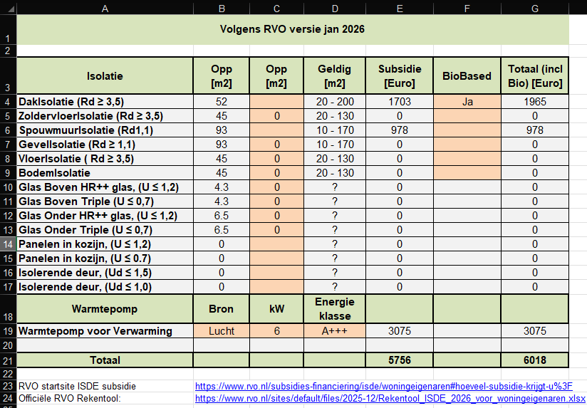

In het tabblad ISDE, worden van alle maatregelen de subsidies berekend.
In kolom-B staan de oppervlakten zoals berekend door het model. Bent u het daar niet mee eens, dan kunt u in de tweede kolom de juiste oppervlakte invullen. In onderstaand voorbeeld is dat voor een groot aantal maatregelen die niet worden uitgevoerd, dus daarom oppervlakte op 0 gesteld.
Als je In de kolom Biobased "Ja" invult berekent het programma ook de extra toeslag.
In de berekening wordt rekening gehouden met verdubbeling van de subsidie aanvraag bij meer dan 1 maatregel.
De subsidie voor de warmtepomp is afhankelijk van hoeveel CO2 de warmtepomp zal gaan besparen en hier is dus een gemiddelde genomen.
Subsidies voor Ventilatie, Zonneboiler, Warmtenet, Elektrisch koken (alleen bij warmtenet) zijn in de tabel onderaan dit tabblad opgenomen.
U kunt ook gebruik maken van de officiële rekentool: RVO Rekentool 2026
